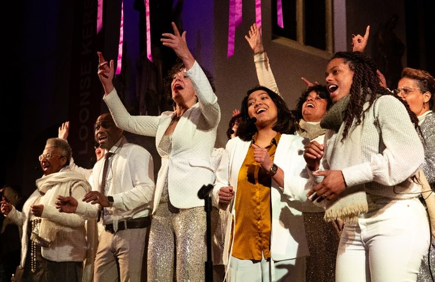
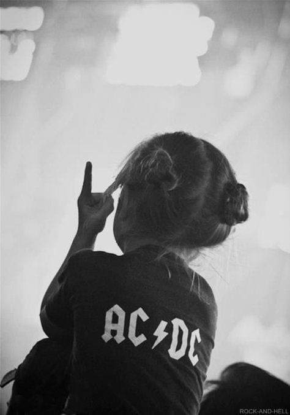
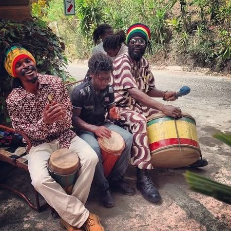
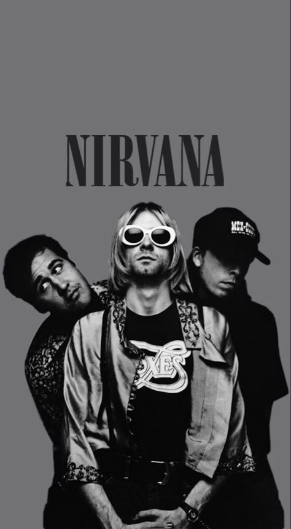

1870
Boogie Woogie

Boogie-Woogie is een genre van Bluesmuziek dat populair werd in de late jaren 1920, maar al ontwikkeld was in Afro-Amerikaanse gemeenschappen sinds de jaren 1870.
1917
Jazz
Jazz is een geïmpriviseerde muziekstijl die beïnvloed is door West-Afrikaanse ritmes.
1935
Gospel
Gospel is een mengsel van religieuze muziek en muziek afkomstig van Afrika maagebracht door de toenmalige slave.
1945
Term Popmuziek

De term popmuziek is een afkorting voor Populaire muziek. De term werd uitgevonden in 1945.
1950
Rock-'n-roll
Rock-'n-rollmuziek komt uit de Verenigde Staten en ontstaat in de jaren '50 als een combinatie van boogie woogie, blues, swing en country.
1955
Countrymuziek

In de jaren 1950 werd country gemengd met rhythm-and-blues en ontstond de rockabilly.
1968
Reggae
De eerste act met een reggaeliedje is van de band Toots and the Maytals. De meest bekende reggae-artiest is Bob Marley.
1977
New Wave

De New Wave cultuur ontstond in de late jaren '70 en de vroege jaren '80. Het combineerde de elementen van punkrock, elektronische muziek, reggae, funk en pop.
1991
Grunge
De grunge stond eind jaren '80. Het album 'Nevermind' van Nirvana wordt beschouwd als het hoogtepunt van grunge.
2001
TV-programma's
Met behulp van TV-programma's proberen platenmaatschappijen nieuw zangtalent en vooral inkomsten aan te boren.